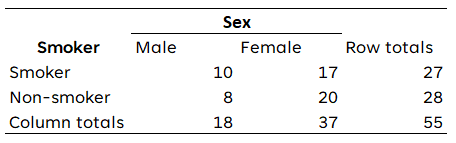
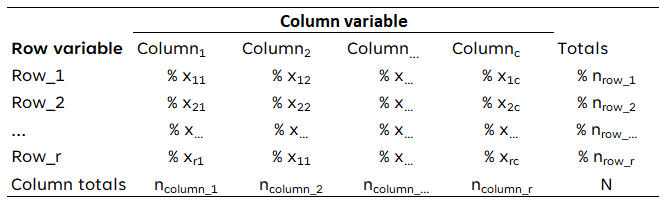
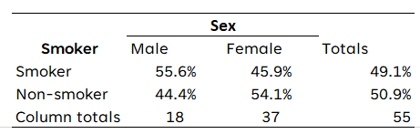
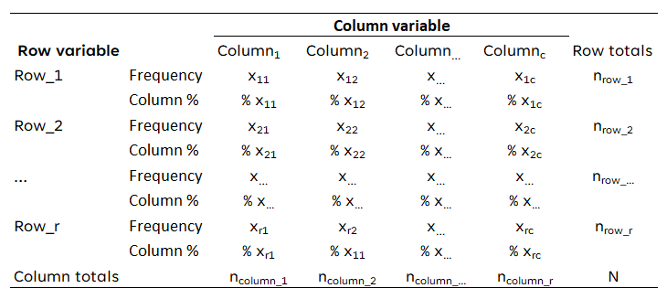
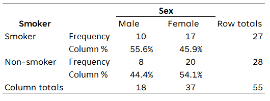

library(expss)
library(openintro)9 Tabellen
9.1 Frequentietabellen
Een frequentietabel toont het aantal keren dat een waarde voorkomt in de data. We hebben al kennis gemaakt met de functie table, die een eenvoudige tabel met tellingen oplevert. Om een uitgebreidere frequentietabel te maken die ook percentages bevat, gebruiken we package expss. Ons voorbeeld gebruikt gegevens uit package openintro. We laden eerst de packages:
We laden daarna de dataset loan50 die deel uitmaakt van het package openintro met behulp van de functie data.
data(loan50)
Opmerking
Onthoud dat we de functie data alleen kunnen gebruiken voor datasets die bij een package horen. Voor het laden van datasets vanuit een bestand zie Paragraaf 1.7.2.
Nu maken we maken een frequentietabel met de functie fre:
fre(loan50$homeownership)| loan50$homeownership | Count | Valid percent | Percent | Responses, % | Cumulative responses, % |
|---|---|---|---|---|---|
| rent | 21 | 42 | 42 | 42 | 42 |
| mortgage | 26 | 52 | 52 | 52 | 94 |
| own | 3 | 6 | 6 | 6 | 100 |
| #Total | 50 | 100 | 100 | 100 | |
| <NA> | 0 | 0 |
fre-
Dit is de functie om een frequentietabel te maken met behulp van het
expsspackage loan50$homeownership-
We specificeren de gebruikte dataset en variabele met behulp van de dollartekennotatie, d.w.z. de naam van het dataframe vóór het dollarteken en de naam van de variabele na het dollarteken.
Rapportage
Voor een frequentietabel is het meestal voldoende om de aantallen en geldige percentages te rapporteren. Dit wordt bereikt door de eerste drie kolommen van een frequentietabel te selecteren en ontbrekende waarden te verwijderen.
fre(loan50$homeownership)[,1:3] |> drop_na()| loan50$homeownership | Count | Valid percent |
|---|---|---|
| rent | 21 | 42 |
| mortgage | 26 | 52 |
| own | 3 | 6 |
| #Total | 50 | 100 |
Rapportage voor gevorderden
Als je het helemaal netjes wil doen, zonder de tabel nog handmatig te bewerken, kun je onderstaande code gebruiken en aanpassen.
loan50 |> # Start met je data frame
pull(homeownership) |> # Selecteer de juiste variabele
set_var_lab("Homeownership") |> # Geef deze een nette naam
fre(stat_lab = c("Frequentie", "Percentage")) |> # Gebruik Nederlandse labels
_[,1:3] |> # Selecteer kolom 1 t/m 3
drop_na() # Laat lege rijen weg| Homeownership | Frequentie | Percentage |
|---|---|---|
| rent | 21 | 42 |
| mortgage | 26 | 52 |
| own | 3 | 6 |
| #Total | 50 | 100 |
9.2 Kruistabellen
Een kruistabel (contingency table of cross table) geeft een samenvatting van gegevens voor twee categoriale variabelen. Hieronder staat een kruistabel van twee variabelen: het geslacht van een respondent en of de respondent rookt.

9.2.1 Twee lay-outs van een kruistabel
De bovenstaande tabel toont de waargenomen frequenties. Dit is niet de manier waarop kruistabel moeten worden gepresenteerd. In plaats daarvan zijn er twee manieren die worden gebruikt en die beide voor deze cursus kunnen worden gebruikt.
9.2.1.1 Lay-out 1
In de eerste lay-out worden alleen de percentages per categorie van de variabele in de rijen, behalve de totaalrij onderaan, getoond. Je berekent de percentages per kolom door het aantal waargenomen frequenties te delen door het totale aantal waarnemingen in die kolom. In de laatste kolom toon je ook de percentages.

Toegepast op bovenstaande gegevens (geslacht van de respondent en roken) zou de kruistabel er als volgt uitzien:

9.2.1.2 Lay-out 2
In de tweede lay-out worden naast de percentages per categorie van de variabele in de rijen ook de waargenomen frequenties getoond. Ook hier deel je voor de percentages de waargenomen frequenties door het totale aantal waarnemingen in elke kolom. In de kolom “rijtotalen” worden echter alleen de waargenomen frequenties getoond.

Toegepast op bovenstaande gegevens zou de kruistabel er als volgt uitzien:

Vanzelfsprekend mogen de engelstalige termen ‘Frequency’, ‘Column %’, ‘Row totals’ en ‘Column totals’ ook vervangen worden door een Nederlandstalig equivalent (Frequentie, Kolompercentage, Rijtotaal, Kolomtotaal).
Rapportage: aanwijzingen
Gebruik een eenvoudige lay-out met een beperkt aantal (horizontale) lijnen. Verticale lijnen zijn niet nodig. De hierboven gebruikte standaard is acceptabel, maar ook een variant met slechts drie lijnen (boven, onder de titelrij en onder) is prima.
Zet de onafhankelijke variabele in de kolommen en de afhankelijke variabele in de rijen. Dit is een conventie (de statistiek verandert op zich niet als je het omdraait); het is voor je lezers makkelijker als je daaraan voldoet.
Percenteer variabelen over de kolommen. Elke kolom moet optellen tot 100%.
Omdat we weten dat de totalen van de kolommen 100% zijn, vermeld je daar de aantallen (in de laatste rij). Op die manier kan de lezer de aantallen van elke cel desgewenst terugrekenen. Het is ook acceptabel om zowel kolompercentages als aantallen in elke cel te vermelden (layout 1).
Doorgaans kan worden afgerond op gehele getallen of één decimaal.
Zet een titel boven de tabel. Begin de titel met ‘Tabel’ en het nummer van de tabel.
Onderaan de tabel kan desgewenst de bron worden vermeld.
Bij de interpretatie van de tabel worden de percentages over de rijen vergeleken, bijvoorbeeld: van de mannen rookte 56%, terwijl van de vrouwen 46% rookte.
9.2.2 Kruistabellen in R
Eenvoudige tabellen kunnen worden gemaakt met table(), maar om kolompercentages en totalen toe te voegen en de mogelijkheid te bieden om te exporteren naar Word/HTML, gebruiken we het package flextable:
library(flextable) data(loans_full_schema)
table_example <- proc_freq(x = loans_full_schema,
row = "application_type",
col = "homeownership",
include.row_percent = FALSE,
include.table_percent = FALSE)
table_exampleapplication_type | homeownership | ||||
|---|---|---|---|---|---|
MORTGAGE | OWN | RENT | Total | ||
individual | Count | 3,839 | 1,170 | 3,496 | 8,505 |
Col. pct | 80.2% | 86.5% | 90.6% | ||
joint | Count | 950 | 183 | 362 | 1,495 |
Col. pct | 19.8% | 13.5% | 9.4% | ||
Total | Count | 4,789 | 1,353 | 3,858 | 10,000 |
table_example <- proc_freq(….)-
We maken een tabel genaamd
table_examplemet de functieproc_freq. x = loans_full_schema-
Dit specificeert welke dataset (data.frame) we willen gebruiken.
row = "application_type"-
Dit specificeert de variabele die we willen gebruiken in de rijen van de kruistabel.
col = "homeownership"-
Dit specificeert de variabele die we willen gebruiken in de kolommen van de kruistabel.
include.row_percent = FALSE-
Hiermee geven we aan dat we de rijpercentages niet willen opnemen. Kolompercentages worden standaard wel opgenomen.
include.table_percent = FALSE-
Dit geeft aan dat we geen tabelpercentages willen opnemen.
Met de volgende code kun je dit opslaan in een Word bestand (save_as_docx) en een HTML bestand (save_as_html). Merk op dat dit bestand wordt opgeslagen in de huidige werkdirectory (working directory).
save_as_docx(table_example, path = "table_example.docx")
save_as_html(table_example, path = "table_example.html")table_example-
Dit specificeert welke tabel we willen exporteren.
path = "table_example.docx"-
Dit specificeert de bestandsnaam voor het te exporteren bestand.
Merk op dat deze tabel nog enige (handmatige) bewerking vereist als je alleen de percentages in de cellen wilt opnemen (zie lay-out 1). Vergeet ook niet om een titel voor de tabel op te nemen.
9.2.3 Kruistabellen in R met expss
Een alternatieve oplossing vereist iets langere R-code, maar levert een tabel op die niet verder bewerkt hoeft te worden voor lay-out optie 1. Deze oplossing gebruikt de pakketten expss en huxtable:
library(huxtable)
library(expss)data(loans_full_schema)
cross_table <- loans_full_schema |>
tab_cells(`Application type`= application_type) |>
tab_cols(`Home ownership`= homeownership, total(homeownership)) |>
tab_total_label("Total") |>
tab_stat_cpct() |>
tab_pivot() |>
drop_empty_rows() |>
drop_empty_columns() |>
as_huxtable() |>
theme_article() |>
set_number_format(row=everywhere,col=everywhere,value= "%.0f %%" ) |>
set_number_format(row=final(1),col=everywhere,value=0)
cross_table| Home ownership | #Total | ||||
|---|---|---|---|---|---|
| MORTGAGE | OWN | RENT | |||
| Application type | individual | 80 % | 86 % | 91 % | 85 % |
| joint | 20 % | 14 % | 9 % | 15 % | |
| #Total | 4789 | 1353 | 3858 | 10000 | |
cross_table = loans_full_schema-
Dit definieert dat we een tabel genaamd
cross_tablemaken met de datasetloans_full_schema. Wanneer je een eigen tabel maakt, zou je deze natuurlijk hernoemen naar de naam van je eigen dataset. tab_cells(`Application type`= application_type)-
Hiermee geven we aan dat we de variabele
application_typewillen gebruiken in de rijen. We geven ook aan dat we deze variabele willen weergeven als Application type, met behulp van ˝ Application type` `` (let op het gebruik van de zogenoemde backtick (˝) ). tab_cols(`Home ownership`= homeownership, total(homeownership))-
Dit specificeert dat we de variabele
homeownershipwillen gebruiken in de kolommen en ook een Totaal kolom willen opnemen (met het totaal van geldige waarden op de variabele homeownership). We specificeren ook dat we willen dat de variabele wordt weergegeven alsHome ownership. tab_total_label("Total")-
We willen graag dat het totaallabel wordt weergegeven als
Total. tab_stat_cpct()-
We willen dat de tabel kolompercentages bevat.
tab_pivot()-
Deze functie creëert de tabel.
drop_empty_rows()-
Verwijder alle lege rijen uit de tabel
drop_empty_columns()-
Verwijder alle lege kolommen uit de tabel
as_huxtable()-
Dit transformeert deze tabel in een tabel waar het
huxtablepakket mee kan werken, wat verdere wijziging en export van de tabel mogelijk maakt. theme_article()-
Geef de tabel een thema dat hem geschikt maakt voor publicatie in een wetenschappelijk tijdschrift.
set_number_format(row=everywhere,col=everywhere,value= "%.0f %%" )-
Rond percentages af op 0 decimalen en voeg het percentagesymbool toe.
set_number_format(row=final(1),col=everywhere,value=0)-
Rond de totaaltelling in de laatste rij af op 0 decimalen.
Note: je hoeft alleen de eerste drie regels van deze code te veranderen om hem te gebruiken voor je eigen data: de naam van de data set en de variabelen.
Deze tabel kan op de volgende manier worden opgeslagen in een Word document (quick_docx) en/of HTML bestand (quick_html):
quick_docx(cross_table,
file = "cross_table.docx")
quick_html(cross_table,
file = "cross_table.html")cross_table-
Dit specificeert welke tabel we willen exporteren.
file = "cross_table.docx"-
Dit specificeert de bestandsnaam voor het te exporteren bestand.